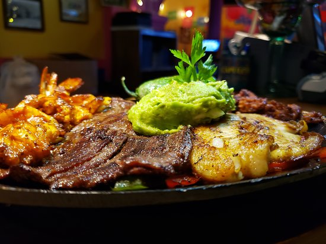

RESTAURANTE LA CABAÑA
La Cabaña es un moderno restaurante asador ubicado en el corazón de Montevideo. Sus raíces están arraigadas en la cocina tradicional del Rio de la Plata. Las recetas giran en torno a las parrillas y al horno de barro. Puedes degustar desde cortes de carne importados hasta vegetales, pastas y risotto.
